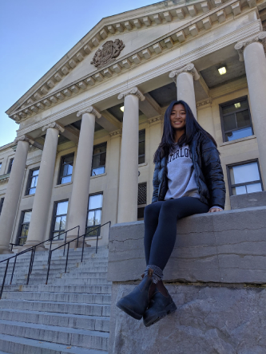

<div class="long-page-container">
    <div class="section">
        <h4>About Me</h4>
        <p class="intro">Hi there! My name is Sabrina and I'm studying Management Engineering at the University of
            Waterloo.
            I created this site because I want to show everyone how to play my favourite boardgame, Avalon.
            Before you dive into the other components of this website, get to know me a little better!</p>

        <div class=info-section>
            <div class="image"></div>
            <div class="info">
                <h5 class="title">Facts About Me: </h5>
                <ul>
                    <li>Volleyball is my favourite sport. Recently I hurt my right shoulder so I've been practicing with
                        my
                        left. Hopefully I become ambidextrous</li>
                    <li>I also play other sports like basketball, frisbee and snowboarding</li>
                    <li>If you can't tell already, I LOVE PLAYING BOARDGAMES </li>
                    <li>I used to do competitive rythmic gymnastics when I was young. I practiced 24hrs a week!</li>
                    <li>Other people give me a bad rap for this - I dislike chocolate </li>
                    <li>I enjoy learning different skills like Photoshop, Ukulele and Coding Languages</li>
                </ul>

                <h5 class="title">Connect With Me: </h5>
                <ul>
                    <li> <a target="_blank" href="https://linkedin.com/in/sabrina-lu09">LinkedIn</a></li>
                    <li><a target="_blank" href="https://github.com/sabrina-lu">GitHub</a></li>
                    <li><a target="_blank" href="../../../assets/me/resume.pdf">My Resume</a></li>
                </ul>
            </div>
        </div>
    </div>
</div>